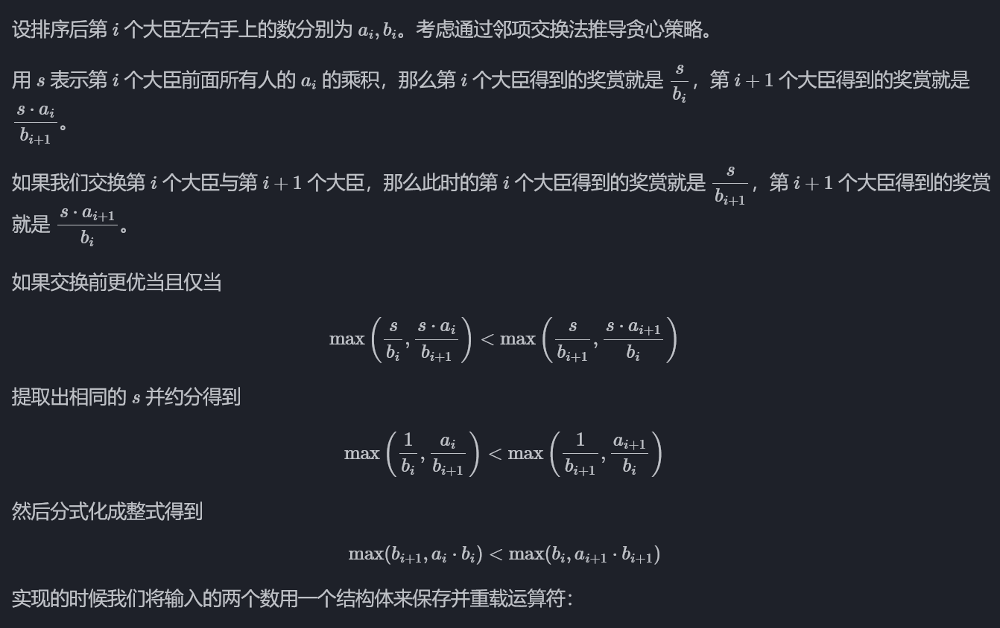

数组
二分法
class Solution {
public:
int search(vector<int>& nums, int target) {
int left = 0 ;
int right =nums.size()-1;
while (left <= right ){
int middle = left + ((right-left)/2);
if (target < nums[middle]){
right = middle-1;
} else if (target > nums[middle]){
left = middle+1;
}else{
return middle;
}
}
return -1;
}
};
翻转链表
class Solution {
public:
ListNode* reverseList(ListNode* head) {
ListNode* temp;
ListNode* cur = head;
ListNode* pre = NULL;
while(cur){
temp=cur->next;//暂时保存cur的下一个节点
cur->next=pre;//反转
pre=cur;//更新pre和cur指针
cur=temp;
}
return pre;
}
};
环形链表
-
先找环形链表相遇点
-
从头结点出发一个指针，从相遇节点 也出发一个指针，这两个指针每次只走一个节点， 那么当这两个指针相遇的时候就是 环形入口的节点。
枚举
一个数组中的数互不相同，求其中和为  的数对的个数
的数对的个数
int ans = 0;
for(int i=0;i<n;i++)
for(int j=0;j<i;j++)
if (a[i]+a[j]=0) ++ans;
优化后
#include <cstring>
constexpr int MAXN = 100000; //MAXN是数组内元素的界
int solve(int n,int a[]){
bool met[MAX*2+1];//创建一个能装下[-MAXN,MAXN]的桶
memset(met,0,sizeof(met));
int ans = 0;
for(int i =0;i<n;++i){
if(met[MAXN-a[i]]) ++ans;//如果桶内有想要的元素，ans加一
met[MAXN+a[i]]=true;//把当前元素放入桶
}
return ans;
}
个人理解，一开始把桶初始化全部为false，第一个出现元素，ans还是为0，但是把这个元素放入桶内，比如假设 MAXN = 100000，数组 a[] = [1, -1, 2, -2, 3]，n = 5，遍历数组，a[0]=1,MAXN-1=99999，met[99999]为false,-1还没出现过，将met[MAXN+1]=met[100001]设为true,找第二个数a[1]=-1，met[MAXN-(-1)]=met[100001]为true，1已经出现过，ans++,然后将met[MAXN+(-1)]=met[99999]设置为TRUE……时间复杂度为O(n)
模拟
一只长度不计的蠕虫位于 英寸深的井的底部。它每次向上爬 英寸，但是必须休息一次才能再次向上爬。在休息的时候，它滑落了 英寸。之后它将重复向上爬和休息的过程。蠕虫爬出井口需要至少爬多少次？如果蠕虫爬完后刚好到达井的顶部，我们也设作蠕虫已经爬出井口。
#include <iostream>
int main(){
int n ,u,d;
std::cin>>u>>d>>n;
int dist,chance = 0;
while(1){
dist+=u;
chance++;
if(dist>=n)break;
dist -= d;
}
std::cout << chance << '\n';
return 0;
}
递归&分治
在函数中调用自身
- 结束条件
- 自我调用
int size(Node *head){
int size=0;
for(Node *p=head;p !=nullptr;p=p->next) size--;
return size;
}
int size_recursion(Node *head){
if(head == nullptr) return 0;
return size_recursion(head->next)+1;
}
给定一个二叉树，它的每个结点都存放着一个整数值。
找出路径和等于给定数值的路径总数。
路径不需要从根节点开始，也不需要在叶子节点结束，但是路径方向必须是向下的（只能从父节点到子节点）。
二叉树不超过 1000 个节点，且节点数值范围是 [-1000000,1000000] 的整数。
struct TreeNode{
int val;
TreeNode *left;
TreeNode *right;
TreeNode(int x ):val(x),left(nullptr),right(nullptr);
}
int count (TreeNode *node ,int sum){
if (node ==nullptr) return 0;
return (node -> val == sum)+ count(node->left,sum=node->val)+count(node->right,sum-node->val);
}
int pathSum(TreeNode *root,int sum){
if(root == nullptr)return 0 ;
return count(root,sum)+pathSum(root->left,sum)+pathSum(root->right,sum);
}
pathSum函数，二叉树的遍历框架，分别对左右左子树递归调用函数本省
count函数每个节点和子树
贪心算法
- 排序解法
恰逢 H 国国庆，国王邀请 n 位大臣来玩一个有奖游戏。首先，他让每个大臣在左、右手上面分别写下一个整数，国王自己也在左、右手上各写一个整数。然后，让这 n 位大臣排成一排，国王站在队伍的最前面。排好队后，所有的大臣都会获得国王奖赏的若干金币，每位大臣获得的金币数分别是：排在该大臣前面的所有人的左手上的数的乘积除以他自己右手上的数，然后向下取整得到的结果。
国王不希望某一个大臣获得特别多的奖赏，所以他想请你帮他重新安排一下队伍的顺序，使得获得奖赏最多的大臣，所获奖赏尽可能的少。注意，国王的位置始终在队伍的最前面。

operator<：比较当前对象*this和传入对象x
struct uv{
int a,b;
bool operator<(const uv &x) const{
return max(x.b,a*b)<max(b,x.a*x.b)
}
};
- 后悔解法
字符串
反转字符串
class Solution {
public:
void reverseString(vector<char>& s) {
for(int i =0,j=s.size()-1;i<s.size()/2;i++,j--){
swap(s[i],s[j]);
}
}
};
swap的两种实现
int tmp = s[i];
s[i]=s[j];
s[j]=tmp;
s[i]^=s[j];
s[j]^=s[i];
s[i]^=s[j];
反转字符串2
给定一个字符串 s 和一个整数 k，从字符串开头算起, 每计数至 2k 个字符，就反转这 2k 个字符中的前 k 个字符。
如果剩余字符少于 k 个，则将剩余字符全部反转。
如果剩余字符小于 2k 但大于或等于 k 个，则反转前 k 个字符，其余字符保持原样。
示例:
输入: s = “abcdefg”, k = 2 输出: “bacdfeg”
class Solution {
public:
string reverseStr(string s, int k) {
for(int i =0;i<s.size();i+=(2*k)){
if(i+k<=s.size()){
reverse(s.begin()+i,s.begin()+i+k);
}else{//剩余字符少于k个，则全部反转
reverse(s.begin()+i,s.end());
}
}
return s;
}
};
注意for的构造
翻转字符串的单词
- 去除多余空格
- 全部翻转
- 对于每个单词单独反转
class Solution {
public:
void reverse(string&s,int start,int end){
for(int i = start,j=end;i<j;i++,j--){
swap(s[i],s[j]);
}
}
void removeExtraSpaces(string& s) {
int slowIndex = 0, fastIndex = 0; // 定义快指针，慢指针
// 去掉字符串前面的空格
while (s.size() > 0 && fastIndex < s.size() && s[fastIndex] == ' ') {
fastIndex++;
}
for (; fastIndex < s.size(); fastIndex++) {
// 去掉字符串中间部分的冗余空格
if (fastIndex - 1 > 0
&& s[fastIndex - 1] == s[fastIndex]
&& s[fastIndex] == ' ') {
continue;
} else {
s[slowIndex++] = s[fastIndex];
}
}
if (slowIndex - 1 > 0 && s[slowIndex - 1] == ' ') { // 去掉字符串末尾的空格
s.resize(slowIndex - 1);
} else {
s.resize(slowIndex); // 重新设置字符串大小
}
}
string reverseWords(string s) {
removeExtraSpaces(s);//去除多余空格，保证单词之间只有一个空格，且字符串首尾没空格
reverse(s,0,s.size()-1);
int start=0;
for(int i=0;i<=s.size();++i){
if(i==s.size()||s[i]==' '){//到达空格或者单词最后
reverse(s,start,i-1);//反转，注意是左闭右闭
start = i+1;//更新下一个单词的start
}
}
return s;
}
};
双指针解法，加深理解，快指针有试验的性质，如果有多个空格跳到最后一个空格让慢指针同步
重复的子字符串
判断字符串s是否有重复字串，只要两个s拼接在一起，里面还出现一个s的话（掐头去尾避免找的是原先的s），就说明是由重复字串组成
class Solution {
public:
bool repeatedSubstringPattern(string s) {
string t =s+s;
t.erase(t.begin());
t.erase(t.end()-1);//掐头去尾
if(t.find(s)!=std::string::npos)
{return true;
}else{return false;}
}
};
哈希表
有效的字母异位词
class Solution {
public:
bool isAnagram(string s, string t) {
int record[26]={0};//初始化为0
for(int i=0;i<s.size();i++){
record[s[i]-'a']++;
}
for(int i = 0;i<t.size();i++){
record[t[i]-'a']--;
}
for (int i=0;i<26;i++){
if (record[i]!=0){
return false;
}
}
return true;
}
};
如果两个单词是异位词的话，那么最终record元素应该全部都为0
两个数组的交集
注意，使用数组来做哈希的题目，是因为题目限制了数值的大小，而这道题目没有限制数值的大小，就无法使用数组来做哈希表
- std::set元素唯一且有序，不支持直接修改元素，必须先删除再插入
- std::multiset元素可以重复且有序，不支持直接修改元素，必须先删除再插入
- std::unordered_set元素唯一且无序，不支持直接修改元素，必须先删除再插入
std::set和std::multiset底层实现都是红黑树，std::unordered_set的底层实现是哈希表， 使用unordered_set 读写效率是最高的，并不需要对数据进行排序，而且还不要让数据重复，所以选择unordered_set。
class Solution {
public:
vector<int> intersection(vector<int>& nums1, vector<int>& nums2) {
unordered_set<int> result_set;//存放结果
int hash[1005]={0};
for(int num:nums1){//每次循环nums1的值都会赋给num
hash[num]=1;
}
for (int num:nums2){
if(hash[num]==1){
result_set.insert(num);
}
}
return vector<int>(result_set.begin(),result_set.end());
}
};
很巧妙的解法，相当于hash是个映射表，先把nums1映射到hash表上，映射方式就是查找位置，在查询nums2元素在hash表上的位置，也是用同样的方式，有点像加密算法（只不过这个算法很简单）
快乐数
编写一个算法来判断一个数 n 是不是快乐数。
「快乐数」定义为：对于一个正整数，每一次将该数替换为它每个位置上的数字的平方和，然后重复这个过程直到这个数变为 1，也可能是 无限循环 但始终变不到 1。如果 可以变为 1，那么这个数就是快乐数。
如果 n 是快乐数就返回 True ；不是，则返回 False 。
class Solution {
public:
int getSum(int n) {//计算各位数的平方和
int sum=0;
while(n){
sum+=(n%10)*(n%10);
n/=10;
}
return sum;
}
bool isHappy(int n){
unordered_set<int> set;
while(1){
int sum = getSum(n);
if(sum == 1){
return true;
}
if(set.find(sum)!=set.end()){//检查sum出现在容器中，如果sum曾经出现过，说明已经陷入了无线循环，立刻return false
return false;
}else{
set.insert(sum);
}
n=sum;
}
}
};
两数之和
给定一个整数数组 nums 和一个目标值 target，请你在该数组中找出和为目标值的那 两个 整数，并返回他们的数组下标。
你可以假设每种输入只会对应一个答案。但是，数组中同一个元素不能使用两遍。
示例:
给定 nums = [2, 7, 11, 15], target = 9
因为 nums[0] + nums[1] = 2 + 7 = 9
所以返回 [0, 1]
class Solution {
public:
vector<int> twoSum(vector<int>& nums, int target) {
std::unordered_map <int,int> map;
for(int i=0;i<nums.size();i++){
//寻找是否有匹配的key，auto用来自动匹配数值类型
auto iter = map.find(target-nums[i]);
if(iter!=map.end()){//iter是否在容器中
return {iter ->second,i};//iter->second 是匹配键对应的值（即之前存储的下标），返回两个下标
}
map.insert(pair<int,int>(nums[i],i));//如果没找到匹配对，就把访问过的元素和下标加入到map中
}
return{};
}
};
QA1:为什么会想到用哈希表？
判断元素是否存在
QA2:哈希表为什么用map？
个人认为map有点像python里面的字典，可以查询键值对。
- 数组的大小是受限制的，而且如果元素很少，而哈希值太大会造成内存空间的浪费。
- set是一个集合，里面放的元素只能是一个key，而两数之和这道题目，不仅要判断y是否存在而且还要记录y的下标位置，因为要返回x 和 y的下标。所以set 也不能用。
此时就要选择另一种数据结构：map ，map是一种key value的存储结构，可以用key保存数值，用value再保存数值所在的下标。不需要key有序，选择std:unordered_map效率更高
QA3：本题的map是用来存什么的？
存放访问过的元素
QA4：map中的key和value用来存什么？
key：数组元素，value：数组元素下标
赎金信
给定一个赎金信 (ransom) 字符串和一个杂志(magazine)字符串，判断第一个字符串 ransom 能不能由第二个字符串 magazines 里面的字符构成。如果可以构成，返回 true ；否则返回 false。
(题目说明：为了不暴露赎金信字迹，要从杂志上搜索各个需要的字母，组成单词来表达意思。杂志字符串中的每个字符只能在赎金信字符串中使用一次。)
注意：
你可以假设两个字符串均只含有小写字母。
canConstruct(“a”, “b”) -> false canConstruct(“aa”, “ab”) -> false canConstruct(“aa”, “aab”) -> true
发一：暴力破解
class Solution {
public:
bool canConstruct(string ransomNote, string magazine) {
for (int i = 0; i < magazine.length(); i++) {
for (int j = 0; j < ransomNote.length(); j++) {
if (magazine[i] == ransomNote[j]) {
ransomNote.erase(ransomNote.begin() + j);
break;
}
}
}
if (ransomNote.length() == 0) {
return true;
}
return false;
}
};
遇到相同的字符，就把ransomNote中的字符删除，如果最后ransomNote为0，则返回true
法二：哈希表
class Solution {
public:
bool canConstruct(string ransomNote, string magazine) {
int record[26] = {0};
//add
if (ransomNote.size() > magazine.size()) {
return false;
}
for (int i = 0; i < magazine.length(); i++) {
// 通过record数据记录 magazine里各个字符出现次数
record[magazine[i]-'a'] ++;
}
for (int j = 0; j < ransomNote.length(); j++) {
// 遍历ransomNote，在record里对应的字符个数做--操作
record[ransomNote[j]-'a']--;
// 如果小于零说明ransomNote里出现的字符，magazine没有
if(record[ransomNote[j]-'a'] < 0) {
return false;
}
}
return true;
}
};
QA：为什么用数组而不是map？
map要维护红黑树或哈希表，空间消耗更大
栈与队列
用栈实现队列
要有两个栈，一个In，一个Out，终点删除元素，先把In栈里面的push到Out栈中
class MyQueue {
public:
stack<int> stIn;
stack<int> stOut;
MyQueue() {
}
void push(int x) {
stIn.push(x);
}
int pop() {//将队列的第一个元素移除，并且返回这个元素
if(stOut.empty()){
while(!stIn.empty()){
stOut.push(stIn.top());
stIn.pop();
}
}
int result = stOut.top();
stOut.pop();
return result;
}
int peek() {//get the front element
int res = this->pop();//对当前对象调用pop()
stOut.push(res);//pop()弹出了元素res，现在再添加回去，不改变
return res;
}
bool empty() {
return stIn.empty()&&stOut.empty();
}
};
用队列实现栈
class MyStack {
public:
queue<int> que1;
queue<int> que2;
MyStack() {
}
void push(int x) {
que1.push(x);
}
int pop() {
int size = que1.size();
size--;
while(size--){//将que1导入que2，但要留下最后一个元素
que2.push(que1.front());
que1.pop();
}
int result = que1.front();//留下的最后一个元素就是要返回的值
que1.pop();
que1 = que2;
while(!que2.empty()){//清空que2，que2相当于一个工具了
que2.pop();
}
return result;
}
int top() {
int size = que1.size();
size--;
while(size--){//将que1导入que2，但要留下最后一个元素
que2.push(que1.front());
que1.pop();
}
int result = que1.front();
que2.push(que1.front());//获取值后将最后一个元素也加入que2中，保持原本的结构不变
que1.pop();
que1=que2;
while(!que2.empty()){
que2.pop();
}
return result;
}
bool empty() {
return que1.empty();
}
};
总的思想就是把que1导入que2，但要留下一个元素，存储这个元素，然后对这个元素操作/不操作，恢复原来的队列，que2相当于一个桥梁工具
匹配括号
class Solution {
public:
bool isValid(string s) {
if(s.size()%2!=0)return false;//如果长度为奇数，一定不符合要求
stack<char> st;
for(int i = 0;i<s.size();i++){
if(s[i]=='(') st.push(')');
else if(s[i]=='{') st.push('}');
else if (s[i]=='[') st.push(']');
//遍历左括号，检查st
else if (st.empty()|| st.top()!=s[i]) return false;//如果还在遍历，st已经为空，或者遍历找不到不匹配
else st.pop();//st.top()与s[i]相等，栈弹出元素
}
return st.empty();
}
};
经典题了，s有做左括号就放入st相应的右括号，s有右括号就检查st中有无一样的右括号
逆波兰表达式求值
展示了计算机如何思考，如果是中缀表达式，计算机得先从左到右遍历一遍再按回过头来优先级，如 ( 1 + 2 ) * ( 3 + 4 ) ，但如果是后缀表达式加不加括号无所谓因为顺序就是从左往右，如 ( ( 1 2 + ) ( 3 4 + ) * )
思考：把tokens里面的数字入栈，遇到运算符不入栈，把栈里面的两个数字取出来，反过来做运算，再把这个数字入栈
class Solution {
public:
int evalRPN(vector<string>& tokens) {
stack<long long> st;
for(int i=0;i<tokens.size();i++){
if(tokens[i]=="+"||tokens[i]=="-"||tokens[i]=="*"||tokens[i]=="/"){
long long num1 = st.top();
st.pop();
long long num2 = st.top();
st.pop();
if(tokens[i]=="+") st.push(num2+num1);
if(tokens[i]=="-") st.push(num2-num1);
if(tokens[i]=="*") st.push(num2*num1);
if(tokens[i]=="/") st.push(num2/num1);
}else{
st.push(stoll(tokens[i]));//stoll()将函数转换成long long int
}
}
auto result = st.top();
return result;
}
};
二叉树
struct TreeNode {
int val;
TreeNode *left;
TreeNode *right;
TreeNode(int x):val(x),left(NULL),right(NULL){}
}
递归遍历
前序：中左右
中序：左中右
后序：左右中
二叉树的直径
给你一棵二叉树的根节点，返回该树的 直径 。
二叉树的 直径 是指树中任意两个节点之间最长路径的 长度 。这条路径可能经过也可能不经过根节点 root 。
两节点之间路径的 长度 由它们之间边数表示。
思路：一个节点为起点的经过节点数的最大值为dn，那么二叉树的直径就是所有节点dn的最大值减一
子树深度为max(L,R)
dn为L+R+1
class Solution {
int ans;
int depth(TreeNode* rt){
if(rt == NULL){
return 0;
}
int L=depth(rt->left);//左儿子为根的子树的深度
int R=depth(rt->right);//右二子为根的子树的深度
ans = max(ans,L+R+1);//更新计算ans
return max(L,R)+1;//返回该节点为根的子树的深度
}
public:
int diameterOfBinaryTree(TreeNode* root) {
ans =1;
depth(root);
return ans-1;
}
};
翻转二叉树
class Solution {
public:
TreeNode* invertTree(TreeNode* root) {
if(root == NULL){
return 0;
}
TreeNode* L = invertTree(root->left);
TreeNode* R = invertTree(root->right);
root->left = R;
root->right = L;
return root;
}
};
数组与矩阵
重塑矩阵
在 MATLAB 中，有一个非常有用的函数 reshape ，它可以将一个 m x n 矩阵重塑为另一个大小不同（r x c）的新矩阵，但保留其原始数据。
思路：把二维数组m*n的nums映射成一个一维数组。将这个以为数组映射回r行c列
class Solution {
public:
vector<vector<int>> matrixReshape(vector<vector<int>>& mat, int r, int c) {
int m = nums.size();
int n =nums[0].size();
if(m*n!=r*c) {
return nums;
}
vector<vector<int>> ans(r,vector<int>(c));
for(int x=0;x<m*n;++x){
ans[x/c][x%c]=nums[x/n][x%n];
}
return ans;
};
第 x 个元素在 nums 中对应的下标为 (x / n,x % n)，而在新的重塑矩阵中对应的下标为 (x / c,x % c)。我们直接进行赋值即可。
搜索二维矩阵
编写一个高效的算法来搜索 *m* x *n* 矩阵 matrix 中的一个目标值 target 。该矩阵具有以下特性：
- 每行的元素从左到右升序排列。
- 每列的元素从上到下升序排列。
暴力搜索
class Solution {
public:
bool searchMatrix(vector<vector<int>>& matrix, int target) {
for(int i =0;i<matrix.size();i++){
for(int j=0;j<matrix[i].size();j++){
if(matrix[i][j] == target){
return true;
}
}
}
return false;
}
};
有序矩阵中第K小的元素
class Solution {
public:
int kthSmallest(vector<vector<int>>& matrix, int k) {
vector<int> rec;
for(int i=0;i<matrix.size();i++){
for(int j =0;j<matrix[i].size();j++){
rec.push_back(matrix[i][j]);
}
}
sort(rec.begin(),rec.end());
return rec[k-1];
}
};
寻找重复数
给定一个包含 n + 1 个整数的数组 nums ，其数字都在 [1, n] 范围内（包括 1 和 n），可知至少存在一个重复的整数。
假设 nums 只有 一个重复的整数 ，返回 这个重复的数 。
class Solution {
public:
int findDuplicate(vector<int>& nums) {
int n= nums.size();
int l =1,r=n-1,ans = -1;
while(l<=r){
int mid=(l+r)/2;
int cnt =0;
for(int i=0;i<n;++i){
cnt +=(nums[i]<=mid);
}
if(cnt<=mid){
l=mid+1;
}else{
r=mid-1;
ans =mid;
}
}
return ans;
}
};
抽屉原理：如果cnt小于等于mid，说明重复数在右半部分，如果cnt大于mid，说明重复数在左半部分
思考：本来是想sort然后比较，但是要求不能动原数组，数字范围就是1-n，可以把1-n看作一个sort后的数组，这么向就好多了，小于等于mid说明较大的数字偏多，在n/2-n的范围，反之在左边，当r=l时候结束循环
优美的排列
给你两个整数 n 和 k ，请你构造一个答案列表 answer ，该列表应当包含从 1 到 n 的 n 个不同正整数，并同时满足下述条件：
- 假设该列表是
answer = [a1, a2, a3, ... , an]，那么列表[|a1 - a2|, |a2 - a3|, |a3 - a4|, ... , |an-1 - an|]中应该有且仅有k个不同整数。
返回列表 answer 。如果存在多种答案，只需返回其中 任意一种 。
思路：从特殊情况到一般情况
思路与算法
当 k=1 时，我们将 1∼n 按照 [1,2,⋯,n] 的顺序进行排列，那么相邻的差均为 1，满足 k=1 的要求。
当 k=n−1 时，我们将 1∼n 按照 [1,n,2,n−1,3,⋯] 的顺序进行排列，那么相邻的差从 n−1 开始，依次递减 1。这样一来，所有从 1 到 n−1 的差值均出现一次，满足 k=n−1 的要求。
对于其它的一般情况，我们可以将这两种特殊情况进行合并，即列表的前半部分相邻差均为 1，后半部分相邻差从 k 开始逐渐递减到 1，这样从 1 到 k 的差值均出现一次，对应的列表即为： [1,2,⋯,n−k,n,n−k+1,n−1,n−k+2,⋯]
class Solution {
public:
vector<int> constructArray(int n, int k) {
vector<int> answer;
for(int i=1;i<n-k;++i){
answer.push_back(i);
}
for(int i=n-k,j=n;i<=j;++i,--j){
answer.push_back(i);
if(i!=j){
answer.push_back(j);
}
}
return answer;
}
};
注意i!=j，是为了避免相同的元素重复加入数列
数组的度
class Solution {
public:
int findShortestSubArray(vector<int>& nums) {
unordered_map<int,int> left;//记录每个数字第一次出现的位置
unordered_map<int,int> right;//记录每个数字最后一次出现的位置
unordered_map<int,int> counter;//统计每个数字出现的次数
int degree = 0;
for(int i=0;i<nums.size();i++){
if(!left.count(nums[i]))
left[nums[i]]=i;
right[nums[i]]=i;
counter[nums[i]] ++;
degree = max(degree,counter[nums[i]]);
}
int res = nums.size();
for(auto&kv:counter){//kv是counter中元素的引用，就是遍历counter键值对
if(kv.second == degree){
res = min(res,right[kv.first]-left[kv.first]+1);//kv.keft是数字，kv.right是出现次数
}
}
return res;
}
};
思路：先找数组的度，degree等于counter.values()的最大值，用left和right保存了每个元素再数组中第一次出现的位置和最后一次的位置，字典中所有value的最大值就是数组的度；再求与原数组相同度的最短子数组，那么出现次数最多的元素第一次和最后一次出现的位置确定